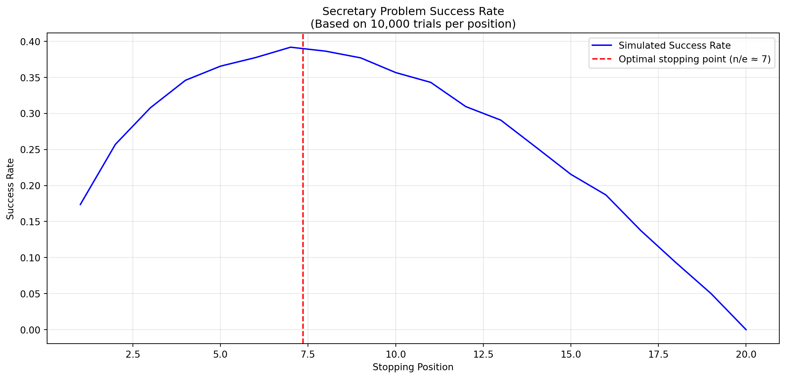

Programming: Everyday Decision-Making Algorithms
Kühne Logistics University Hamburg
Topic: Understanding optimal stopping problems and the famous “Secretary Problem”
Why this matters: Optimal stopping is everywhere in life - from hiring decisions to finding apartments to choosing when to sell stocks. Today we’ll learn the mathematical strategy that maximizes your chances of making the best choice.
By the end of this lecture, you will be able to:
Question: Anybody know what optimal stopping is?
Anybody an
example of
optimal stopping?
Photo by Aditya Ghosh on Unsplash
Photo by Scott Graham on Unsplash
Photo by Shelby Deeter on Unsplash
The name is a bit misleading, as the problem is not about hiring a secretary, but about finding the best candidate. It comes from the 1960s and thus a little outdated.
n candidatesQuestion: Anybody know what ordinal ranking is?
Question: Anybody an idea how we can fail?
Ideas?
The optimal strategy is to:
The mathematically optimal strategy:
This means we fail 63% of the time - but this is the best we can possibly do!
Why does the success probability decrease with more candidates?
Question: Do you see the pattern?
Pattern: 1/n - as we have more options, each individual option is less likely to be the best.
n/e1e is the base of the natural logarithm (≈ 2.718)Percentage of options to look at: 0.368%
Look at first 7.358 candidatesNo worries if you don’t understand the code! We are essentialy just using the formula to calculate the percentage of candidates to look at.
Let’s visualize the success of a simulation with 20 candidates:

Question: Imagine a dating scenario, where the other person can also reject you. Optimal stopping point?
Question: What if in dating, the other person can also reject you?
Life lesson: Higher risk of rejection means we should be less picky!
What if we don’t have a fixed number of candidates, but a fixed amount of time?
Example: One year to find an apartment
Question: How should we adapt our strategy?
Side note for drivers: An increase in occupancy from 90 to 95% doubles the search time for all drivers!
Question: How does optimal stopping connect to programming?
What we learned:
Any questions
so far?
That’s it for optimal stopping!
Let’s have a short break and then continue with our first Python programming session.
Think Python is a great book to start with. It’s available online for free. Schrödinger Programmiert Python is a great alternative for German students, as it is a very playful introduction to programming with lots of examples.
For more interesting literature, take a look at the literature list of this course.
Lecture I - Optimal Stopping | Dr. Nils Roemer | Home